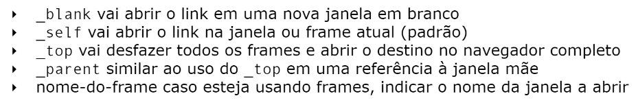

Página interna para ser utilizada como Exemplo
Para voltar a pagina com todos os exercícios clique Aqui
para exemplificar mais uma ancora para link a forma para dizer ao mecanismo de busca do google para não seguir (ou não indexar a busca) e usando o parâmetro rel="nofollow" como nesse link do youtube
para facilitar na hora da pesquisa segue abaixo uma imagem retirada do artigo em pdf do nosso querido prof. Gustavo Guanabara Link do youtube:
